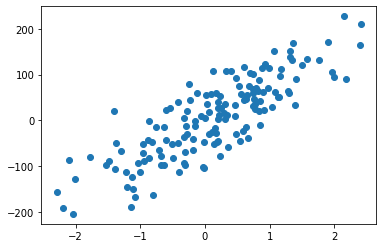
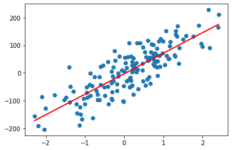

Tugas 9 | Regresi Linear
Tugas 9 | Regresi Linear#
Regresi Linear merupakan sebuah pendekatan untuk memodelkan hubungan antara variabel terikat (Y) dan variable bebas (X). Salah satu kegunaan dari regresi linear adalah untuk melakukan prediksi berdasarkan data-data yang telah dimiliki sebelumnya. Hubungan di antara variabel-variabel tersebut disebut sebagai model regresi linear
import numpy as np
from sklearn.linear_model import LinearRegression
from sklearn.datasets import make_regression
from matplotlib import pyplot as plt
X_test, y_test = make_regression(n_samples=150, n_features=1, noise=50)
reg = LinearRegression().fit(X_test,y_test)
plt.scatter(X_test, y_test)
plt.show()
# reg.score(X_test, y_test)
# reg.coef_
# reg.intercept_
reg.predict(np.array([[3]]))

array([219.15461205])
y_test
array([ 63.72425077, -28.59401443, 3.38083906, 74.37182041,
59.50077228, -47.66804992, 122.26239639, 108.38379796,
19.6059238 , -191.17571422, -96.6061302 , 26.07673483,
67.71922098, 41.44795376, 60.23363318, 133.02643069,
52.10593429, -113.05838345, 6.24398212, 90.41591584,
27.32318292, -69.68102923, 44.67428355, 170.07593519,
-29.72012697, 9.93537491, 131.53492465, 105.29487586,
-96.24247177, 211.20237128, 18.69253184, -88.43933532,
21.87012546, -81.79734622, -37.526641 , -112.00531471,
-47.00185752, -156.47408371, -81.60449107, 61.16823937,
-11.8438003 , 51.49530151, -52.39820388, -100.89148806,
36.1724136 , 20.10055407, -86.33437848, 6.40323189,
57.97958005, -49.45565587, -167.57258767, -76.56211074,
103.97026108, 22.90907873, -161.87933729, -97.54181502,
-12.76224414, 44.20327877, -14.08673663, -45.11955768,
45.88326168, -41.74614846, -26.48886125, 58.90637454,
-1.1788034 , 71.71087914, 57.4524079 , -25.19370074,
34.11356924, 134.36580623, 115.10680619, 63.91301422,
-50.6042379 , -113.20503286, -71.08222417, 4.08513104,
55.21768401, 40.57465817, 75.03774386, 93.58382569,
-102.6734696 , 30.90672065, 112.47493329, 113.96544387,
-79.87674636, -43.43370171, -127.24349836, 11.83178203,
-29.64492379, 34.99640823, -145.85841173, -39.63583963,
152.63257428, 40.32934225, -15.02145479, -105.26919048,
-47.38115133, 55.37116251, -10.12328471, 139.46332613,
9.86870931, 121.0472362 , -76.57133576, -91.96926088,
-48.50714076, -0.67626927, 94.63981921, 32.93081159,
-51.79526145, 46.132782 , -122.72315483, 12.96732974,
87.78334621, -97.16013081, 46.02993798, 79.82562744,
101.45992782, 15.3164555 , -148.67689382, -16.30861637,
28.92488029, 60.93288413, -44.48421606, 170.32333108,
-92.82983446, -13.18963376, -23.38523036, 227.49234557,
96.97310629, 71.18941939, 164.58468326, -34.99690489,
26.60975236, 108.01917272, 117.5061506 , -58.86648226,
-88.500419 , 108.29476572, -189.78615678, -66.9188097 ,
-65.07654711, 20.92051928, 62.70112056, 53.92386425,
90.65215735, -63.8068807 , 27.58549552, -203.93845762,
36.89707973, 150.68020127])
X_test
array([[ 1.28939819],
[ 0.47501753],
[ 0.2038654 ],
[ 0.52675889],
[-0.12574603],
[ 0.19372046],
[ 0.93317198],
[ 0.32110046],
[-1.41255539],
[-2.19012345],
[-0.68030982],
[ 0.76955728],
[ 0.73696268],
[ 0.8455614 ],
[ 1.29265041],
[ 1.34880876],
[ 1.12475779],
[-0.99720468],
[-0.00512705],
[ 2.17438347],
[-0.53973539],
[-0.30203298],
[ 0.6078238 ],
[ 1.35538169],
[ 0.06599015],
[ 0.45732114],
[ 1.7562252 ],
[ 1.96742107],
[-1.52964768],
[ 2.41148577],
[ 0.0697904 ],
[-1.48800545],
[-0.60335328],
[-0.86425773],
[ 0.65827643],
[-1.2234507 ],
[-0.82331686],
[-2.29119949],
[-0.48615348],
[ 1.0850463 ],
[-0.15045547],
[ 1.13883085],
[-0.95464432],
[-0.02853542],
[ 0.03169923],
[ 0.82956339],
[-2.10491422],
[-0.32623524],
[ 0.55916234],
[-1.37452333],
[-1.08211392],
[-0.67309602],
[ 0.69440238],
[ 0.91103824],
[-0.8060298 ],
[-0.30291527],
[-0.29594503],
[-0.23342059],
[ 0.63088266],
[ 0.20251062],
[ 0.62516902],
[-0.88193557],
[ 0.17661109],
[ 0.74534316],
[-0.8573261 ],
[ 0.79532873],
[ 0.08753665],
[ 0.10741276],
[ 1.38767649],
[ 1.58201226],
[ 0.99385156],
[ 0.81457438],
[-0.5037537 ],
[-0.39489886],
[-0.96428576],
[ 0.31395227],
[ 0.01189617],
[ 0.20538 ],
[ 0.67888927],
[ 0.47647472],
[-0.02113362],
[ 0.74483835],
[ 1.17966399],
[ 0.87504925],
[-1.77469519],
[-0.60908409],
[-2.00863609],
[ 0.33589845],
[-0.28455879],
[ 0.30286578],
[-1.20797198],
[-0.19031093],
[ 1.06523739],
[-0.41275814],
[-0.63827405],
[-1.39576018],
[-0.01768974],
[ 0.65157836],
[ 0.85134821],
[ 1.30676198],
[-0.06545131],
[ 1.49354867],
[ 0.23357669],
[-1.03408974],
[-0.41365917],
[-0.15844117],
[ 1.99906087],
[ 0.45820611],
[ 0.13982382],
[ 0.63382458],
[-1.12553454],
[ 0.20982147],
[ 0.83123628],
[-0.62677495],
[ 0.7625423 ],
[-0.24489486],
[ 0.74469907],
[ 0.30029768],
[-1.11526013],
[ 0.15281347],
[ 1.03335134],
[ 0.17067343],
[ 0.53498328],
[ 1.90468442],
[-0.33109239],
[-0.76317392],
[ 0.58283423],
[ 2.14669477],
[ 1.15377642],
[ 0.97393095],
[ 2.39358456],
[-0.3239553 ],
[ 0.1947428 ],
[ 0.12111619],
[ 0.60125581],
[ 0.36023621],
[-0.94262785],
[ 0.39514842],
[-1.13732999],
[-1.29103141],
[-0.70966042],
[-0.28292568],
[ 0.89735655],
[ 0.22888684],
[ 1.41042847],
[-0.18933144],
[ 0.25135288],
[-2.03235969],
[ 0.77628828],
[ 1.31985258]])
reg.score(X_test, y_test)
0.692447607768476
reg.coef_
array([74.08391088])
reg.intercept_
-3.0971205793570276
plt.scatter(X_test, y_test)
Y_plot = reg.coef_*X_test+reg.intercept_
plt.plot(X_test, Y_plot, color = 'r')
plt.show()

reg.predict(np.array([[2]]))
array([145.07070117])